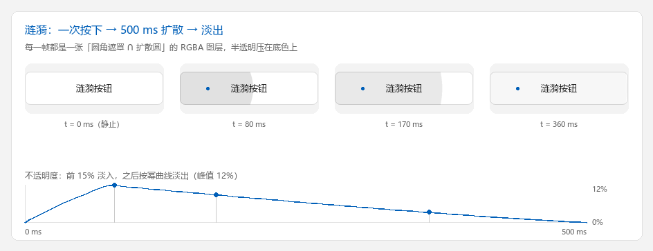

涟漪按钮：一个完整的自定义控件
这一页把 自定义组件 里的零件拼成一个真的能动的控件： Material 风格的圆角按钮，按下时光标处扩散出一圈涟漪，键盘可触发、可禁用、可换主题。
完整代码在仓库的 examples/ripple_button.py（单文件，约 650 行，含自检）。
它演示四件事：
- 用绘制引擎画按钮底色，用 Pillow 合成半透明图层（Tk 的 canvas item 做不到逐像素透明）；
- 用
after(16, ...)跑一段按时间算进度的动画，掉帧也不会拖长时长； - 把
DDrawWidget的状态位接到涟漪上（悬停 / 按压 / 焦点 / 禁用）； - 换主题只需要换一份配色字典再重画。

ripple_layer() 合成：底色走绘制引擎，涟漪是「圆角遮罩 ∩ 扩散圆」的 RGBA 图层。蓝点是按下位置，曲线是同一份 ripple_alpha()跑起来
python examples/ripple_button.py # 默认自动挑栅格引擎（skia > cairo > pillow）
python examples/ripple_button.py --engine tksvg # 指定引擎，观察每帧重绘的开销差异
python examples/ripple_button.py --theme dark # 深色主题
python examples/ripple_button.py --check # 只跑自检，不开窗口
| 参数 | 作用 |
|---|---|
--engine NAME |
用哪个绘制引擎（tksvg / wand / skia / pillow / cairo） |
--theme {light,dark} |
初始主题；窗口里按 T 也能切 |
--check |
非交互自检：涟漪几何 + 控件生命周期，退出码 0 表示全过 |
按 空格 或 回车 也能从按钮中心触发一次涟漪（需要按钮先拿到焦点，点一下即可）。
为什么不用 create_oval
Material 的涟漪是一圈半透明的圆，压在按钮底色上，还要被圆角裁掉。 Tk 的 canvas item 没有逐像素 alpha：
- 给 item 设
-alpha是整块位图的透明度，不是渐变的圆； -stipple能给网点状的半透明，但没有抗锯齿，也没法逐帧变化浓度；create_oval画出来的是不透明圆，会盖住底色和描边。
所以这里让 Pillow 先算出一张与按钮等大的 RGBA 图层，再用 create_image 贴上去——
透明度、圆角裁剪、抗锯齿就都对上了。
四步拆解
1. 遮罩：圆 ∩ 圆角矩形
scale = SUPERSAMPLE # 3 倍超采样，缩小后边缘才不毛刺
size = (width * scale, height * scale)
clip = Image.new("L", size, 0) # 圆角矩形：涟漪不能漫出圆角
ImageDraw.Draw(clip).rounded_rectangle(
(0, 0, size[0] - 1, size[1] - 1), radius=radius * scale, fill=255
)
r = ripple_radius(width, height, x, y) * ease_out_cubic(progress) * scale
circle = Image.new("L", size, 0) # 当前半径的实心圆
ImageDraw.Draw(circle).ellipse(
(x * scale - r, y * scale - r, x * scale + r, y * scale + r), fill=255
)
# 逐像素取较小值 = 求交；再缩小到按钮尺寸，顺便得到抗锯齿
mask = ImageChops.darker(clip, circle).resize((width, height), Image.LANCZOS)
mask = mask.point(lambda value: int(value * opacity))
layer = Image.new("RGBA", (width, height), color)
layer.putalpha(mask)
ripple_radius() 取的是按下点到最远角的距离——涟漪扩到这么大才算盖满按钮，
否则从角落按下时涟漪会在按钮中间就停住。
2. 曲线：缓动 + 淡出
def ease_out_cubic(progress):
progress = min(1.0, max(0.0, progress))
return 1.0 - (1.0 - progress) ** 3 # 起步快、收尾慢
def ripple_alpha(progress, peak=0.12):
if progress <= 0.0 or progress >= 1.0:
return 0.0
fade_in = min(1.0, progress / 0.15)
fade_out = max(0.0, 1.0 - (progress - 0.15) / 0.85) ** 1.2
return peak * fade_in * fade_out
半径走缓动曲线（ease_out_cubic），浓度走"前 15% 淡入、之后淡出"的幂曲线。
两条曲线分开，视觉上才像 Material：先是一团浓色迅速铺开，再整体慢慢褪掉。
3. 动画循环：16 ms 一帧，进度按时间算
def _tick(self):
self._job = None
if not self.winfo_exists() or self._ripple is None:
return
if self._ripple.progress() >= 1.0:
self._ripple = None
self._paint() # 最后一帧擦掉叠加层
return
self._paint()
self._schedule() # 再来一帧
def _schedule(self):
if self._job is None and self._ripple is not None:
self._job = self.after(FRAME_MS, self._tick)
进度不是"每帧 +16 ms"累加出来的，而是每帧用 time.monotonic() 重新算：
@dataclass
class _Ripple:
x: float
y: float
started: float
def progress(self):
elapsed_ms = (time.monotonic() - self.started) * 1000.0
return min(1.0, max(0.0, elapsed_ms / RIPPLE_MS))
这样掉帧只丢帧、不拖时长：主线程卡一下，下一帧直接跳到正确的进度。
把 started 参数留给外部传，是给自检和截图用的——一行就能复现"播到 40%"的那一帧。
self.after(...) 挂在控件自己身上，取消也用控件自己的 after_cancel；
不要对 root 调 after_cancel（见 常见问题与排查 第 5 条）。
4. 叠放顺序与图片保活
def _paint(self):
width, height = self.winfo_width(), self.winfo_height()
if width <= 1 or height <= 1:
return
palette = self.palette
state = self.interaction_state(self.dcget("enabled", True))
radius = float(min(self.dcget("corner_radius", 8), width / 2.0, height / 2.0))
self.delete("all")
# 1) 底色 + 1px 描边：交给绘制引擎
body = self.draw_roundrect(
0, 0, width, height, radius,
fill=palette["disabled"] if state == "disabled" else palette[state],
outline=palette["outline"],
outline_opacity=palette["outline_opacity"],
width=1, temppath=self.temppath,
)
self.addtag_withtag("body", body)
# 2) 涟漪：压在底色之上、文字之下
if self._ripple is not None and state != "disabled":
self._draw_ripple(width, height, radius)
# 3) 文字
self.create_text(
width / 2.0, height / 2.0,
text=self.dcget("text", ""), fill=text_color, font=self.font,
tags=("text",),
)
# 4) 焦点环画在最上层，向内缩 3px
if self.isfocus and state != "disabled":
ring = self.draw_roundrect(
3, 3, width - 3, height - 3, max(radius - 3.0, 1.0),
fill="transparent", outline=palette["focus"], width=2,
temppath=self.temppath2,
)
self.addtag_withtag("focus", ring)
每帧 delete("all") 再全部重画，看起来"很浪费"，但实测完全够（见下面的性能表）。
换成增量重绘反而要维护四层 item 的相对顺序，得不偿失。
涟漪图层每帧都是新的 PhotoImage，必须交给 _keep_photo() 保活，
否则 Python 侧一回收，画布上的图就变白板：
photo = ImageTk.PhotoImage(layer, master=self)
item = self.create_image(0, 0, anchor="nw", image=photo, tags=("ripple",))
self._keep_photo(item, photo) # 少了这一行，涟漪跑几帧就消失
事件与状态
DDrawWidget 已经维护好 enter / button1 / isfocus 三个状态位，
并把 <Button-1> 绑给了 _event_on_button1。覆写时先调 super()，
再补自己的逻辑——圆心直接用 event.x / event.y，这是控件坐标，
和 create_image 的坐标系一致，不需要换算：
def _event_on_button1(self, event=None):
super()._event_on_button1(event)
if not self.dcget("enabled", True):
return
self.focus_set()
x = event.x if event is not None else self.winfo_width() / 2.0
y = event.y if event is not None else self.winfo_height() / 2.0
self.ripple(x, y)
键盘触发单独绑：<space> / <Return> 从中心起涟漪并发一次 <<Clicked>>，
和 tk.Button 的行为对齐。
换主题就是换字典再重画，不需要重建控件：
button.dconfigure(theme="dark") # 本控件覆写了 dconfigure，改完立即 _draw()
三个真实踩过的坑
坑 1：基类顺序写错会直接崩
class RippleButton(DCanvas, DDrawWidget): ...
# TypeError: Cannot create a consistent method resolution order (MRO)
# for bases DCanvas, DDrawWidget
DDrawWidget 本身就继承自 DCanvas（中间还隔着 DDrawWidgetCanvas）,
所以只需要 class RippleButton(DDrawWidget)。基类一多，MRO 立刻罢工。
坑 2：draw_roundrect() 不接受 tags
item = self.draw_roundrect(..., tags=("body",))
# ValueError: Invalid attribute 'tags' for svg-element <rect>.
draw_roundrect() 的额外关键字参数最终会交给 svgwrite 的 rect(**kwargs)，
而 tags 不是合法 SVG 属性——只有走 SVG 回退路径时才会暴露，
在栅格引擎上测不出来。打标签请用返回值：
item = self.draw_roundrect(...)
self.addtag_withtag("body", item)
坑 3：第一帧是空的，直到鼠标划过
症状：窗口起来了，按钮位置一片空白；鼠标移上去才出现。
原因：DDrawWidget._draw() 里有一句 if not self.winfo_ismapped(): return。
"先把控件 pack() 好、再 mainloop()"的写法中，<Configure> 往往在窗口
映射之前就发完了（那时 winfo_width() 还是 1），映射之后再也不会来一次——
于是控件永远停在"没画"的状态。
怎么办：补一个 <Map> 绑定，映射发生时再画一次：
self.bind("<Map>", self._event_map, add="+")
def _event_map(self, event=None):
self._draw(event)
这个问题只影响"先建 UI 再进事件循环"的写法；如果你在已经显示的窗口里
动态创建控件，<Configure> 会正常到来，看不出异常。写自己的控件时建议直接照抄这段。
性能
每帧都是全量重绘（delete("all") + 重新渲染底色 + 合成涟漪图层），
在一台普通开发机上测一个 200×48 的按钮、40 帧的耗时：
| 引擎 | 中位数 | p95 |
|---|---|---|
skia |
0.42 ms | 0.90 ms |
pillow |
0.38 ms | 0.79 ms |
cairo |
0.41 ms | 0.64 ms |
tksvg |
4.66 ms | 6.43 ms |
wand |
5.35 ms | 7.41 ms |
60 fps 的预算是每帧 16.7 ms，所以哪怕走默认的 SVG 引擎（tksvg）也还有两倍余量；
换成栅格引擎后开销低一个数量级，涟漪之外的动画也可以照这个模式做。
测量方式是包住 _paint() + update_idletasks() 循环 40 次，取中位数与 p95。
想再快一点
真正贵的是每帧重新渲染底色。把底色渲一次缓存成 PhotoImage，
只在尺寸 / 主题 / 状态变化时重建，涟漪帧就只剩"合成 + 贴图"。
示例里没这么做，是因为它想演示"最直白的写法够不够用"——答案在这个尺寸下是够的。
换成你自己的控件
把这个示例搬到你自己的控件上，只需要替换四件事：
- 底色——
draw_roundrect换成你的绘制调用（draw_track/draw_thumb/ 自定义后端）； - 涟漪形状——
ripple_layer()里的圆角矩形遮罩换成你控件的轮廓； - 触发点——
ripple(event.x, event.y)换成长按、滚动、状态切换都能算出的中心； - 配色——
THEMES换成你自己的字典，dconfigure(theme=...)保持同一个入口。
动画循环那一套（monotonic 算进度 + after 调度 + 结束时擦干净）可以原样复用。